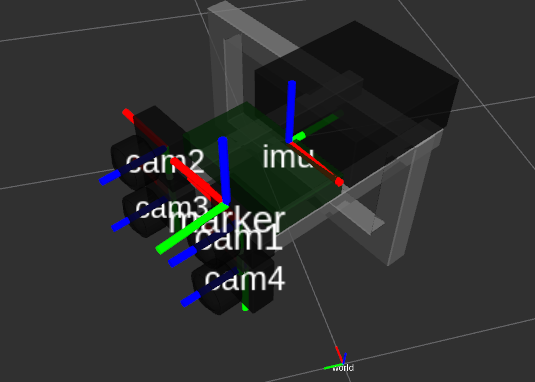
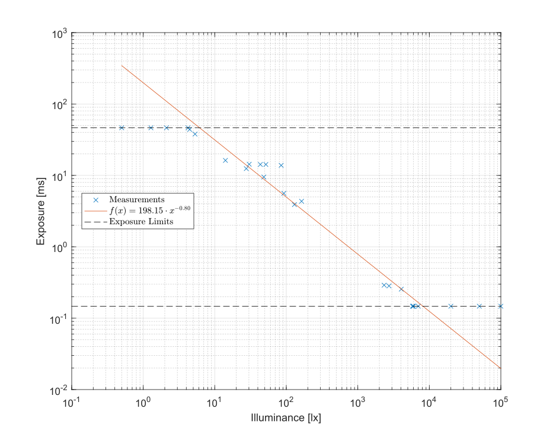

Values¶
All types of values ShutTUM consists of
Value: Summary
reference |
The name as str of the reference frame, this value is associated with. |
stamp |
The timestamp in seconds with decimal places. |
GroundTruth: Summary
extrapolate([method]) |
Find a matching ground truth for a certain Value based on a extrapolation method |
interpolate(stamp[, max_stamp_delta, …]) |
This function enables you to find the interpolated ground truth of a record given a certain timestamp. |
marker |
Returns the Marker, which got tracked by this ground truth. |
stereo(shutter[, extrapolation]) |
Find a matching stereo image pair for this ground truth value. |
Marker: Summary
__init__(sequence, stamp) |
Initialize self. |
Image: Summary
distortion(model) |
Get the distortion coefficients the camera which took this image |
exposure |
The exposure time as float in milli seconds, that this image was illuminated |
focal |
The camera’s focal length as named tuple Vector2(x, y) in pixels |
groundtruth([max_stamp_delta, …]) |
Find the matching GroundTruth value for this image. |
ID |
The frame ID as int of this image. |
illuminance |
The image’s illuminance in lux. |
imu |
The matching Imu for this image. |
K |
The intrinsic camera matrix as 3x3 |
load() |
Loads the JPEG itself into memory: |
opposite |
This holds the reference of the opposite image, that is the image taken from the other camera with the same shutter. |
path |
The path to the JPEG file of this image, relative to the the construction parameter of Sequence(...). |
principle |
The camera’s principle point as named tuple Vector2(x, y) in pixels |
shutter |
The shutter method with which this image was captured as string, either "rolling" or "global" |
resolution |
Returns the resolution of the cameras as a named tuple Resolution(width, height) |
StereoImage: Summary
exposure |
The exposure time as float in milli seconds, that this image was illuminated. |
extrapolate(shutter[, method]) |
Find a matching image for a certain Value based on a extrapolation method |
ID |
The frame ID as int of this image. |
illuminance |
The estimated illuminance measured by the TSL2561 Lux-sensor. |
imu |
The matching Imu for this image. |
L |
The reference to the left Image |
R |
The reference to the right Image |
resolution |
Returns the resolution of the cameras as a named tuple Resolution(width, height) |
shutter |
The shutter method with which this stereo image was captured as string, either "rolling" or "global" |
Imu: Summary
acceleration |
The acceleration 3D vector [x,y,z] of this measurement as |
angular_velocity |
The angular velocity 3D vector around [x,y,z] of this measurement as |
extrapolate([method]) |
Find a matching Imu value for a certain Value based on a extrapolation method |
groundtruth([max_stamp_delta, …]) |
Find the matching GroundTruth value for this Imu value. |
ShutTUM.values.Imu.interpolate |
|
stereo(shutter[, extrapolation]) |
The matching stereo image for this Imu measurement |
-
class
ShutTUM.values.Value(sequence, stamp, reference)[source]¶ A Value represents every measurement of a sensor taken in a specific time instance. A camera might capture an
Image, an IMU will recordImuor the motion capture systemGroundTruth.All these values have some common properties in the ShutTUM:
- They are single, time-discrete values (see
stamp) - They are related to a certain reference frame (see
reference) - They all have a transformation from its reference frame towards that of
"cam1"
Since every value has these three properties, you can achieve easily get the transformations between different values. Therefore the leftshift
<<and rightshift>>operator has been overloaded. Both accept as their right parameter either:- a string indicating the desired reference to or from which to transform (e.g.
"cam1","cam2","world","imu"…) - or another value, whose
referenceproperty is used to determine the transform
The direction of the “shift” means “How is the transformation from reference x to y?”:
# assume we have an image and a ground truth value image = next(iter(sequence.cameras('global'))) # first frame gt = next(sequence.mocap) # first ground truth # Since both Image and GroundTruth derive from Value, they have a reference ... print("Image %s is associated with reference %s" % (image, image.reference)) print("Ground Truth %s is associated with reference %s" % (gt, gt.reference)) # Since we know both transforms to "cam1", we can compute the transformation between the two P_img_wrld = image << gt # pose of the image relative to the world P_img_wrld = gt >> image # same as line above P_img_wrld = gt >> "cam1" # you can also specify the reference (on the right) as string directly # P_img_wrld = "cam1" << gt # This fails, since the shift operators cannot be overloaded for strings in the first place
-
dt(ifunknown=0.001)[source]¶ The time delta elapsed since the last
Valueof this type. Note that this value varies depending on the concrete type of value. That means dt will be about 1/25 s for anImagewhile around 1/120 s for aGroundTruth. If a previous value is not present this will return time specified byifunknown.
-
reference¶ The name as
strof the reference frame, this value is associated with.
-
stamp¶ The timestamp in seconds with decimal places. This stamp describes the exact moment this values has been recorded.
- They are single, time-discrete values (see
-
class
ShutTUM.values.GroundTruth(sequence, data)[source]¶ Bases:
ShutTUM.values.ValueA ground truth is a
Valuewith the reference"world". The ground truth is taken with a higher frequency than the images (around 120 Hz), but slower than the imu. Since the mocap system is stationary in one room only, it will not cover the whole duration of this sequence.-
static
extrapolate(method='closest')[source]¶ Find a matching ground truth for a certain
Valuebased on a extrapolation methodParameters: - value – The value for which to find a matching ground truth value
- method –
An optional extrapolation method to determine the rules for a “match”:
"closest": the image with the least difference to value.stamp is chosen"next": the image with the next larger time stamp than value.stamp is chosen"prev": the image with the next smaller time stamp than value.stamp is chosen"exact": the image where value.stamp == image.stamp holds is chosen, None otherwise
Returns: The matching ground truth or None if no was found
-
static
interpolate(stamp, max_stamp_delta=0.5, position_interpolation=<function Interpolation.linear>, orientation_interpolation=<function Interpolation.slerp>)[source]¶ This function enables you to find the interpolated ground truth of a record given a certain timestamp.
Parameters: - sequence – the sequence which holds all ground truth values to interpolate over
- stamp (float) – the time at which to interpolate (in seconds, with decimal places)
- max_stamp_delta – specify the maximal allowed time deviation [s] for interpolation. When the previous (or next) closest ground truth value is older (or newer) then this delta, None will be returned.
- position_interpolation – A predefined or custom interpolation function
- orientation_interpolation – A predefined or custom interpolation function
Returns: A
GroundTruth-ValueSee also
-
stereo(shutter, extrapolation='closest')[source]¶ Find a matching stereo image pair for this ground truth value.
Parameters: - shutter – The shutter type of the images to find (
"global","rolling", not"both") - extrapolation – An optional extrapolation method to determine the rules for a “match”
(one of
"closest","next","prev","exact")
Returns: The matching stereo image or None if no was found
See also
ShutTUM.StereoImage.extrapolate- shutter – The shutter type of the images to find (
-
static
-
class
ShutTUM.values.Marker(sequence, stamp)[source]¶ Bases:
ShutTUM.values.ValueThe marker is an IR ball placed on top of the setup to be tracked by the mocap.
To enable transformation calculations, this class inherits from
Value, though its transformation stays constant over time.See also
-
class
ShutTUM.values.Image(stereo, shutter, left)[source]¶ Bases:
ShutTUM.values.ValueAn image is a
Valuewith its reference set to one of"cam1"…"cam4".Each image is recorded by a
StereoCamera, which has a shutter type, so as its images. Note, though, that each camera might differ its shutter methods between sequences, to achieve statistical independence. That means, that you cannot rely on e.g."cam1"always having"global"or"rolling"shutter, nor as the other cams.The cameras record data at approximately 20 FPS, but sometimes their might exist frame drops.
You can query a lot of information from an image such as its
shutter,exposuretime andID. Since it is aValueall transform shenanigans apply.-
ID¶ The frame ID as int of this image. This number, prepended to 5 digits is also the name of the JPEG file
-
distortion(model)[source]¶ Get the distortion coefficients the camera which took this image It looks up the parameters in
params/params.yaml/<cam>/distortion/<model>Parameters: model – One of "fov"or"radtan"Returns: either a float \(\omega\) for FOV model, or a named tuple with the four elements
DistCooefs(k1, k2, r1, r2)for Rad Tan model.
-
exposure¶ The exposure time as float in milli seconds, that this image was illuminated
-
focal¶ The camera’s focal length as named tuple
Vector2(x, y)in pixels
-
groundtruth(max_stamp_delta=0.5, position_interpolation=<function Interpolation.linear>, orientation_interpolation=<function Interpolation.slerp>)[source]¶ Find the matching
GroundTruthvalue for this image. Since the motion capture system and the cameras are not synced, we need to interpolate between ground truths by image’s time stamp.Parameters: - max_stamp_delta – specify the maximal allowed time deviation [s] for interpolation. When the previous (or next) closest ground truth value is older (or newer) then this delta, None will be returned.
- position_interpolation – a predefined or custom interpolation function to interpolate positions
- orientation_interpolation – a predefined or custom interpolation function to interpolate quaternions
Returns: the matching interpolated ground truth or None, if any of its values was NaN
See also
ShutTUM.GroundTruth.interpolate
-
illuminance¶ The image’s illuminance in lux.
See also
StereoImage.illuminance
-
imu¶ The matching
Imufor this image. Since the capture of an image is synchronized with the IMU, no interpolation is needed.
-
load()[source]¶ Loads the JPEG itself into memory:
image = ... pixels = image.load() # uses cv2.imread() print(pixels.shape) # (1024, 1280) print(type(pixels)) # numpy.ndarray
-
opposite¶ This holds the reference of the opposite image, that is the image taken from the other camera with the same shutter.
-
path¶ The path to the JPEG file of this image, relative to the the construction parameter of
Sequence(...).
-
principle¶ The camera’s principle point as named tuple
Vector2(x, y)in pixels
-
resolution¶ Returns the resolution of the cameras as a named tuple
Resolution(width, height)See also
Sequence.resolution
-
shutter¶ The shutter method with which this image was captured as string, either
"rolling"or"global"
-
-
class
ShutTUM.values.StereoImage(sequence, data, shutter)[source]¶ Bases:
ShutTUM.values.ValueA stereo image contains of two individual
Images, a left and a right one. It is more or less a container for the two.Note that for internal reasons a stereo image derives from
Value. However, you should not use the transform functions (<<and>>) with this, since a stereo image contains two reference frames, one for each camera:id = 1 stereo = sequence.cameras('rolling')[id] # The following is ambiguous notok = stereo << "imu" # which camera of the two do you mean? # Better would be ok = stereo.L << "imu" # (which is the same as above)
-
ID¶ The frame ID as int of this image. This number, prepended to 5 digits is also the name of the JPEG file
-
exposure¶ The exposure time as float in milli seconds, that this image was illuminated. This is constant for
LandR
-
static
extrapolate(shutter, method='closest')[source]¶ Find a matching image for a certain
Valuebased on a extrapolation methodParameters: - value – The value for which to find a matching image
- shutter – The shutter type of the images to find (
"global","rolling", not"both") - method –
An optional extrapolation method to determine the rules for a “match”:
"closest": the image with the least difference to value.stamp is chosen"next": the image with the next larger time stamp than value.stamp is chosen"prev": the image with the next smaller time stamp than value.stamp is chosen"exact": the image where value.stamp == image.stamp holds is chosen, None otherwise
Returns: The matching stereo image or None if no was found
See also
Sequence.cameras
-
illuminance¶ The estimated illuminance measured by the TSL2561 Lux-sensor.
This float is measured in lx but is only an approximation. This value is constant for both
LandR. Based on this value, the estimatedexposuretime can be computed with the following hand fitted formula:\[t_{exposure} \left ( E_v \right ) = 198.1527 \cdot E_v^{-0.8003}\]This will return
float('nan')if no measurement was taken, such as during an I2C error.
-
imu¶ The matching
Imufor this image. Since the capture of an image is synchronized with the IMU, no interpolation is needed.
-
resolution¶ Returns the resolution of the cameras as a named tuple
Resolution(width, height)See also
Sequence.resolution
-
shutter¶ The shutter method with which this stereo image was captured as string, either
"rolling"or"global"
-
-
class
ShutTUM.values.Imu(sequence, data)[source]¶ Bases:
ShutTUM.values.ValueAn imu value represents the measurement of IMU sensor at a specific time.
Since it is a
Valueyou can use it to calculate transforms with it. Also the IMU is synchronized in a way, that it measures exactly seven times per image. AnyImuvalue consist of three acceleration measurements in X, Y and Z and three angular velocity measurements around the X, Y, and Z axis.See also
Interpolationfor the data frequency &Valuefor the reference frame-
acceleration¶ The acceleration 3D vector [x,y,z] of this measurement as ndarray in \(\frac{m}{s^2}\)
-
angular_velocity¶ The angular velocity 3D vector around [x,y,z] of this measurement as ndarray in \(\frac{rad}{s}\)
-
static
extrapolate(method='closest')[source]¶ Find a matching
Imuvalue for a certainValuebased on a extrapolation methodParameters: - value – The value for which to find a matching
Imuvalue - method –
An optional extrapolation method to determine the rules for a “match”:
"closest": the image with the least difference to value.stamp is chosen"next": the image with the next larger time stamp than value.stamp is chosen"prev": the image with the next smaller time stamp than value.stamp is chosen"exact": the image where value.stamp == image.stamp holds is chosen, None otherwise
Returns: The matching IMU value or None if no was found
- value – The value for which to find a matching
-
groundtruth(max_stamp_delta=0.5, position_interpolation=<function Interpolation.linear>, orientation_interpolation=<function Interpolation.slerp>)[source]¶ Find the matching
GroundTruthvalue for thisImuvalue. Since the motion capture system and the IMU sensor are not synced, we need to interpolate between ground truths by time stamp of thisImuvalue.Parameters: - max_stamp_delta – specify the maximal allowed time deviation [s] for interpolation. When the previous (or next) closest ground truth value is older (or newer) then this delta, None will be returned.
- position_interpolation – a predefined or custom interpolation function to interpolate positions
- orientation_interpolation – a predefined or custom interpolation function to interpolate quaternions
Returns: the matching interpolated ground truth
See also
ShutTUM.GroundTruth.interpolate
-
stereo(shutter, extrapolation='closest')[source]¶ The matching stereo image for this
Imumeasurement :param shutter: The shutter type of the images to find ("global","rolling", not"both") :param extrapolation: An optional extrapolation method to determine the rules for a “match”:"closest": the image with the least difference to value.stamp is chosen"next": the image with the next larger time stamp than value.stamp is chosen"prev": the image with the next smaller time stamp than value.stamp is chosen"exact": the image wherevalue.stamp == image.stampholds is chosen, None otherwise
Returns: The matching stereo image or None if no was found See also
ShutTUM.StereoImage.extrapolate
-